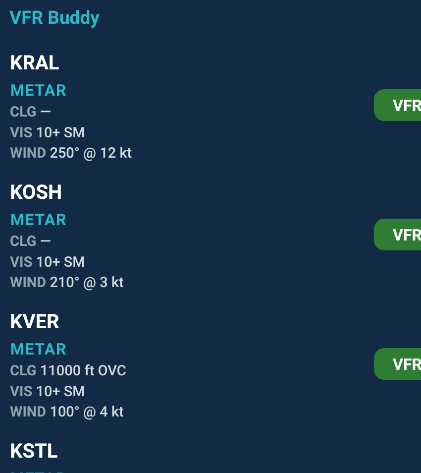
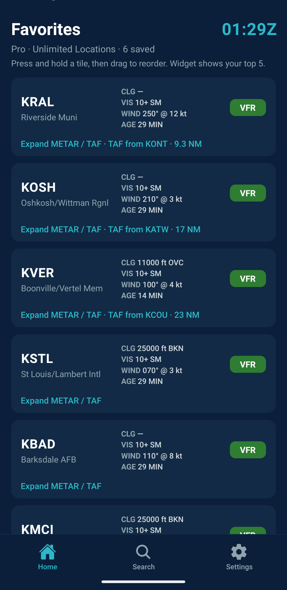
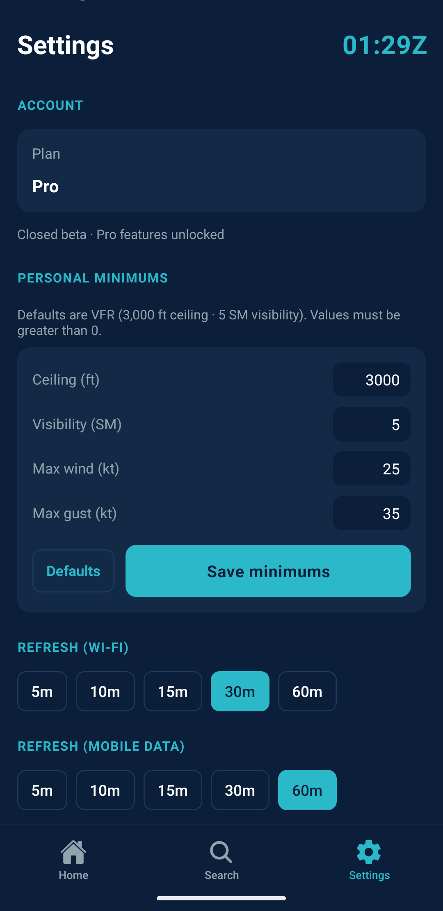
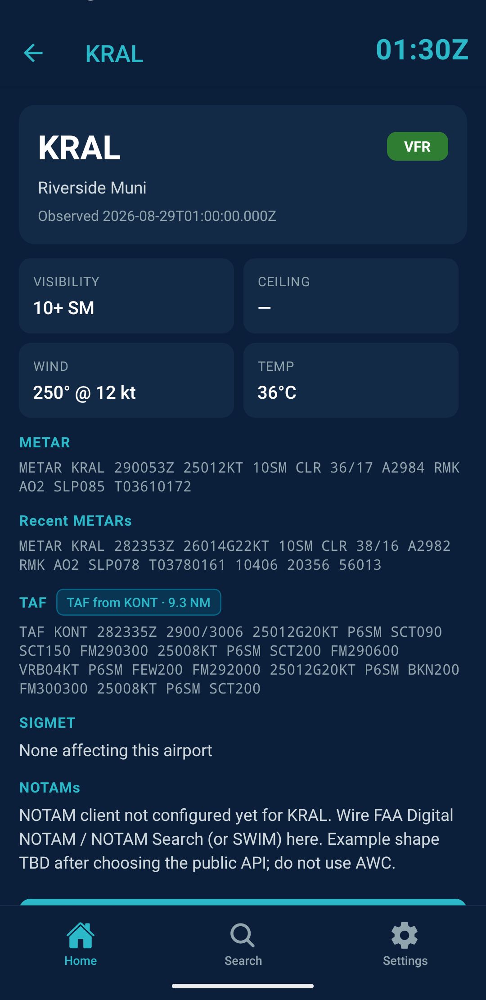

VFR Buddy
VFR Buddy — Simplified Aviation Weather & METAR Widgets
You know the destination. You know how to get there. Now you know the weather.
Download for FREE!:
Home Screen Weather Widget
Simple yet powerful
VFR Buddy is the weather app designed for VFR pilots. Whether it’s your favorite $100 hamburger spot or just some local sight-seeing, VFR Buddy displays weather data for your favorite airports in a flash! The simplified format is viewable in-app or on a home screen widget that shows your top favorites at a glance.

Instant METAR & TAF Weather Data for General Aviation
Flight planning starts here
Thinking about going for a flight? The color-coded interface indicates the current METAR conditions at your favorite airports. Ceiling, visibility, wind, and SIGMETs (if any) are displayed for fast decision making. Know at a glance if pre-flight planning can continue.

Customizable Personal Minimums for VFR, Ultralight, and Paramotor Pilots
Customize for your needs
Customize the app with your personal minimums. Ceiling, visibility, wind, and wind gust are all adjustable. Great for ultralight and paramotor pilots!

METAR, TAF, NOTAM & SIGMET in one tap
Loaded with information, not ads
Full detail METAR, TAF, NOTAM, and SIGMET data are available with a tap.

Upgrade to VFR Buddy Pro ($1.99/year)
- Unlimited favorites
- Home screen widget (top 5 favorites)
- Airport Search history
- Faster METAR/TAF data refreshes
Only $1.99/year
Guides
Paramotor weather appPPG and ultralight wind, gust, and METAR tools › Aviation lock screen widget
METAR on Android and iOS home and lock screens › VFR personal minimums
How to set ceiling, visibility, wind, and gust limits ›